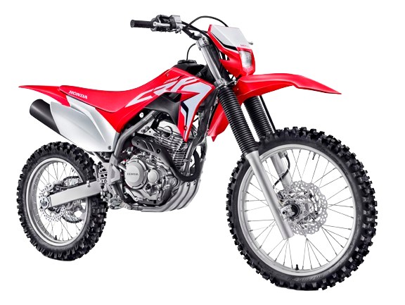
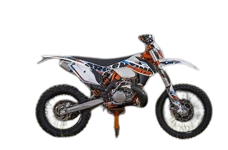
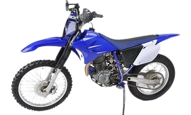
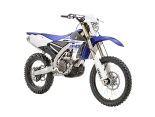

Moto
esse site dara algumas informações sobre motos de trilha
Aqui estão algus exemplos
Honda CRF 250F

A Honda CRF 250F é uma moto off-road inspirada na linha de motocross da Honda. Ela oferece performance e diversão para os pilotos que enfrentam trilhas e pistas mais adversas. Aqui estão algumas informações sobre a CRF 250F:
Motor: Equipada com um motor OHC, monocilíndrico, de 4 tempos, arrefecido a ar, a CRF 250F possui uma cilindrada de 249,58 cc. Sua potência máxima é de 22,2 CV a 7.500 rpm, com um torque máximo de 2,28 kgf.m a 6.000 rpm.
Transmissão: A moto conta com uma transmissão convencional de cinco velocidades, oferecendo opções de marcha adequadas para diferentes situações off-road.
Suspensões: As suspensões dianteira e traseira apresentam um excelente diâmetro de curso, copiando o terreno com mais precisão sem transferir a vibração para o piloto, garantindo a sobreposição de obstáculos com mais segurança.
Controle de pilotagem: A bordo da CRF 250F, o piloto tem uma sensação de pilotagem próxima à das motocicletas de alta performance da Honda. Ela é fina, leve e fácil de pilotar, com comandos precisos e respostas rápidas.
Freios: A CRF 250F possui freios a disco tipo flutuante para garantir uma frenagem eficiente.
KTM 250 EXC-F

A KTM 250 EXC-F é uma moto off-road que oferece desempenho excepcional para os pilotos que enfrentam trilhas e terrenos acidentados. Aqui estão algumas informações sobre essa moto:
Motor: A KTM 250 EXC-F é equipada com um motor KEIHIN e injeção eletrônica de combustível. Essa combinação garante máxima potência e controle para viagens off-road. Sua ECU possui diferentes mapas, ajustando a potência ideal para cada marcha e proporcionando excelente performance1.
Transmissão: Ela possui 6 marchas, permitindo que o piloto escolha a relação adequada para diferentes situações de pilotagem.
Freios: A KTM 250 EXC-F conta com freios a disco, tanto na roda dianteira quanto na traseira, garantindo frenagens eficientes.
Manuseio: Com seu motor compacto e peso mínimo, essa moto oferece um manuseio fantástico. É uma escolha tanto para amadores motivados quanto para profissionais ambiciosos.
Yamaha TT-R 230

A Yamaha TT-R 230 é uma moto off-road projetada para proporcionar diversão e desempenho em trilhas e terrenos acidentados. Aqui estão algumas informações sobre essa moto:
Motor: A TT-R 230 é equipada com um motor SOHC (comando de válvulas simples no cabeçote), 4 tempos e 223 cc de cilindrada. Seu sistema de refrigeração é a ar, e ela possui 6 marchas para oferecer opções de velocidade adequadas para diferentes situações de pilotagem
Design inspirado nas lendas: O visual da TT-R 230 é inspirado nas lendárias motos de motocross e rally da Yamaha, como as YZ e WR. Cada detalhe traz o histórico vitorioso da marca no mundo das competições.
Robustez e agilidade: Exportada para países da América do Norte, Europa e Oceania, a TT-R 230 é reconhecida por sua robustez e agilidade. Ela conta com freio a disco na roda dianteira e rodas com aros da marca japonesa DID.
Posição de pilotagem: A TT-R 230 oferece uma posição de pilotagem que privilegia a agilidade e facilidade de condução, tornando-a perfeita para quem está iniciando no mundo off-road. Seu banco se estende pelo tanque para melhor mobilidade do condutor.
Campeã brasileira de motocross: Com o piloto Wellington Garcia, a TT-R 230 sagrou-se campeã brasileira de motocross na categoria nacional em 2019.
Yamaha WR450F

A Yamaha WR450F é uma moto de enduro projetada para proporcionar desempenho excepcional em trilhas e terrenos acidentados. Aqui estão algumas informações sobre essa moto:
Motor: A Yamaha WR450F é equipada com um motor monocilíndrico de 450 cc. Esse motor utiliza tecnologia de quatro tempos, possui comando de válvulas duplo (DOHC), refrigeração líquida e quatro válvulas. Sua taxa de compressão é de 13,0:1. O diâmetro e curso do motor são de 97,0 mm x 60,8 mm. A alimentação é feita através de injeção eletrônica, e o tipo de combustível utilizado é a gasolina.
• Chassi e suspensão: A WR450F possui um chassi derivado da consagrada YZ450F, oferecendo alto desempenho em etapas técnicas e conforto para competições longas. O chassi foi projetado para centralizar a massa, proporcionando o melhor equilíbrio, absorção de impacto e rigidez. A suspensão dianteira é uma KYB, com garfos invertidos de 48 mm de diâmetro e 310 mm de curso, garantindo maior estabilidade e performance. A suspensão traseira é do tipo monocross, com link composto por um braço oscilante, oferecendo excepcional absorção de impactos e ótima tração.
• Tecnologia aplicativa: Com o aplicativo Power Tuner, você pode criar, modificar e compartilhar os ajustes do motor, mapeamento de ignição e mistura de combustível diretamente do seu celular. Além disso, é possível alterar até dois mapas durante a pilotagem, mantendo você e sua moto conectados com o mesmo objetivo: performance.
• Preço: O preço público sugerido para o modelo WR450F ano/modelo 2023/2023 é de R$ 76.790,00 à vista, sem frete. O preço de venda à vista (base ICMS 12%) é de R$ 77.590,00, com frete incluso no valor de R$ 800,00. Também há a opção de financiamento na modalidade de CDC em 18 meses, com entrada de R$ 46.554,00 (60%) e parcelas mensais fixas e sucessivas de R$ 1.768,00.